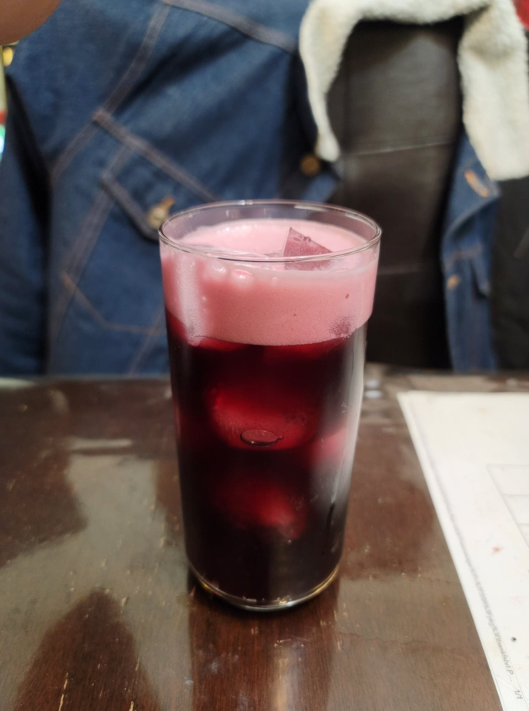

Grape Soda

Ingredients:
- 4 cups Grape juice
- 1/4 cup Ginger bug
Instructions:
- Stir together the grape juice and ginger bug. Strain into 16oz flip-top bottles and let ferment for 3-7 days or until carbonated to preference. Burp daily. Then transfer to refrigerator. Serve cold over ice.